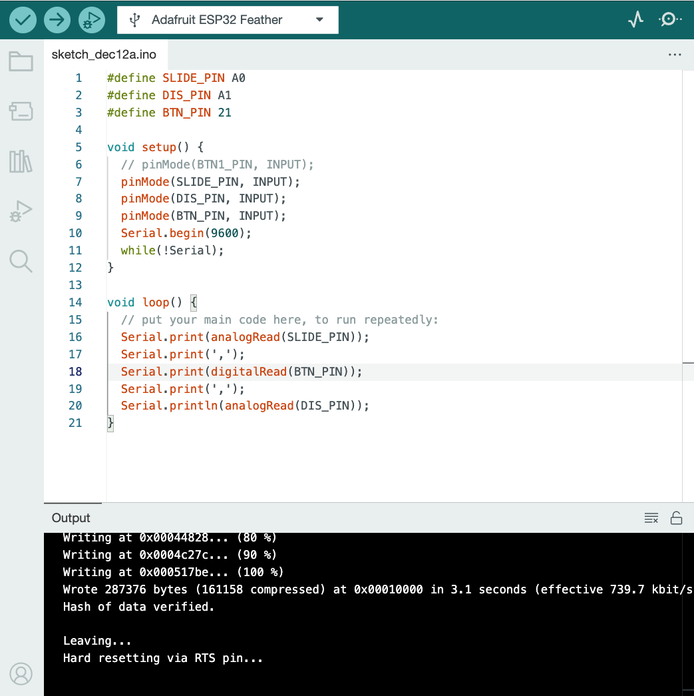

Create a system that would allow you to send messages from 4 sensors via a serial communication from ESP32 to your computer running a Processing sketch. When selecting sensors consider how they match the affordances of the parameters they are meant to control. Implement a sound library in Processing to enable either sound file playback or sound synthesis or both in response to the control signals coming from ESP32. Consider the accompanying visuals - how would you express on the screen the sound parameters you are controlling? Make decisions about these additional questions: Will you make it for your own personal use or more general, usable by a larger group of people? Is it mean for solo performance or multiple people? Will it be specific to a genre of music? How do you select the parameters that you can manipulate, how do the ergonomics and the process of playing affect the layout and the functionality? Capture the build process in images and videos and add with written explanations to your websites.
